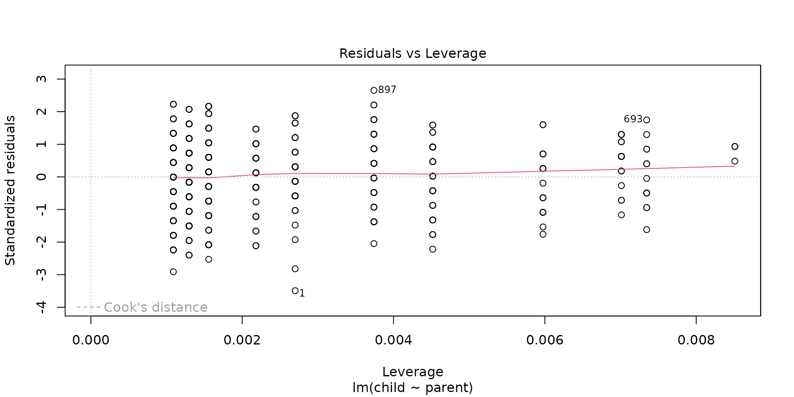
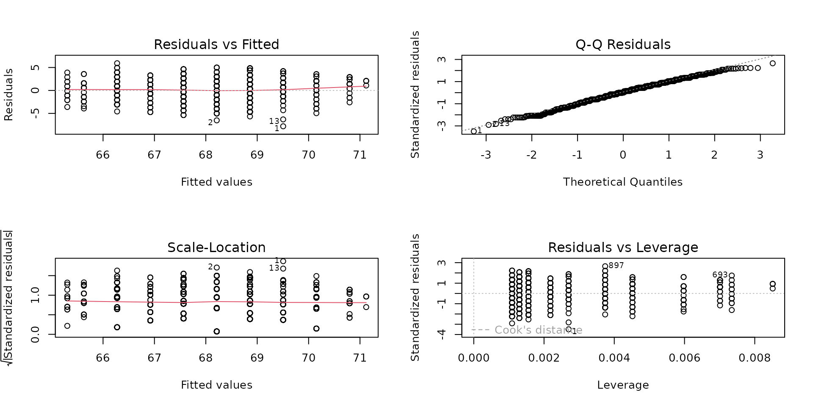
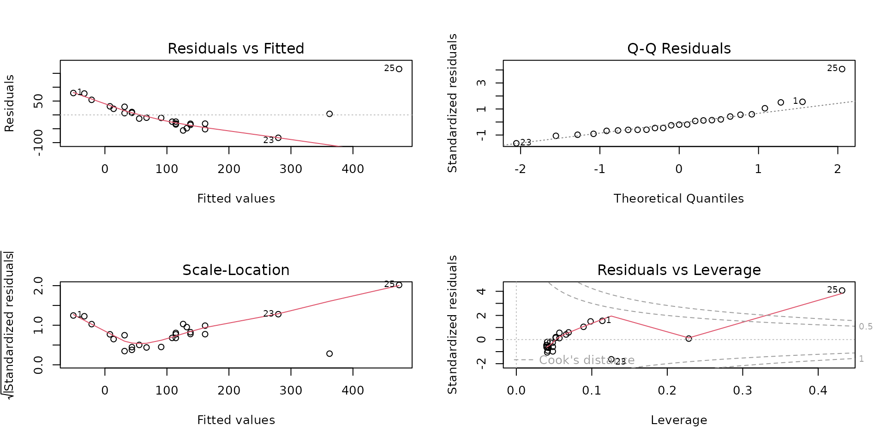
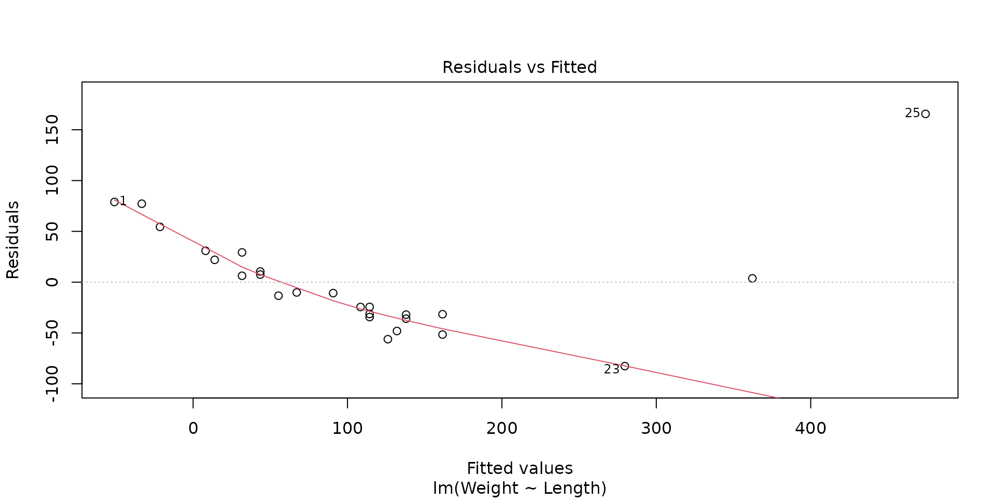
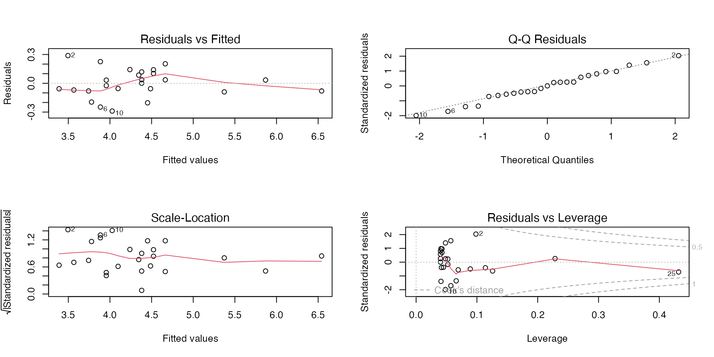

Topic 10 – Simple Linear Regression
ENVX1002 Statistics in Life and Environmental Sciences
The University of Sydney
Mar 2026
Module overview
- Week 9. Describing Relationships
- Correlation (calculation, interpretation)
- Regression (model structure, model fitting
- What/when/why/how
- Week 10. Simple Linear Regression
- Can we use the model?(assumptions, hypothesis testing)
- How good is the model?(interpretation, model fit)
- Week 11. Multiple Linear Regression
- Multiple Linear Regression (MLR) modelling
- Assumptions, interpretation and the principle of parsimony
- Week 12. Nonlinear Regression
- Common nonlinear functions
- Transformations
Last week…
- Correlation \(r\): a measure of the strength and direction of the linear relationship between two variables
- Is there a moderate to strong causal relationship?
Simple linear regression modelling
\[ Y_i = \beta_0 + \beta_1 x_i + \epsilon_i \]
Basically, a deterministic straight line equation \(y=c+mx\), with added random variation that is normally distributed
\[ Y = c + mx + \epsilon \]
Fitting the line
\[ Y_i = \beta_0 + \beta_1 x_i + \epsilon_i \]
\[ Y = c + mx + \epsilon \]
How do we fit a line to data if data are “noisy”?
Code
x <- 1:10
y <- 2 * x + rnorm(10, 0, 2)
# generate y with predicted values
y_pred <- 2 * x
df <- data.frame(x, y)
p1 <- ggplot(df, aes(x, y_pred)) +
geom_point(size = 2) +
geom_smooth(method = "lm", se = FALSE, color = "firebrick") +
labs(x = "x", y = "y", title = "A")
p2 <- ggplot(df, aes(x, y)) +
geom_point(size = 2) +
geom_smooth(method = "lm", se = FALSE, color = "royalblue") +
labs(x = "x", y = "y", title = "B (How do we fit this?)")
library(patchwork)
p1 + p2 + plot_layout(ncol = 2)Usage of least squares
- Student’s t-test (indirectly)
- linear regression
- nonlinear regression (logistic, polynomial, exponential, etc.)
- analysis of variance (ANOVA)
- generalised linear model
- principle component analysis
- machine learning models
- etc…
Galton’s data revisited
- Galton’s data on the heights of parents and their children.
- Is there a relationship between the heights of parents and their children?
How did we end up with the line in the plot above?
How do we analytically fit a line?
We calculate slope (\(\beta_1\)):
\[ \beta_1 = \frac{\sum_{i=1}^n (x_i - \bar{x})(y_i - \bar{y})}{\sum_{i=1}^n (x_i - \bar{x})^2} = \frac{Cov(x,y)}{Var(x)} = \frac{SS_{xy}}{SS_{xx}} \] Then substitute below to get the intercept (\(\beta_0\)):
\[ \beta_0 = \bar{y} - \beta_1 \bar{x} \] Imagine a dataset with a million points - this would be computationally taxing.
How do we numerically fit a line?
- Minimise the sum of the squared residuals via trial and error
- Most common method used via computers (gradient-descent)
- Can be done by hand (but not recommended)
\[\color{firebrick}{argmin_{\beta_0, \beta_1}} \sum_{i=1}^n (y_i - \color{royalblue}{(\beta_0 + \beta_1 x_i)}\color{black})^2\]

Fitting a linear model in R
Is there a relationship between the heights of parents and their children?
Call:
lm(formula = child ~ parent, data = Galton)
Coefficients:
(Intercept) parent
23.9415 0.6463 \[ \widehat{child} = 23.9 + 0.646 \cdot parent\]
Do we trust our model? How good is the model? How can we interpret the results?
Steps for Regression
- Understand the variables
- Explore data
- Fit model
- Check assumptions
- Assess model fit
- Interpret output
Assumptions
The data must meet certain criteria for linear regression, which we often call assumptions.
Assumptions - LINE
- Linearity. The relationship between \(y\) and \(x\) is linear.
- Independence. The errors \(\epsilon\) are independent.
- Normal. The errors \(\epsilon\) are normally distributed.
- Equal Variance of errors \(\epsilon\). At each value of \(x\), the variance of \(y\) is the same i.e. homoskedasticity, or constant variance.
Why do we care?
- If the assumptions are met, then we can be confident that the model is a good representation of the data.
- If they are not met, the results are still presented, but our interpretation of the model is likely to be flawed.
- Hypothesis test results are unreliable
- Standard error is unreliable
- Poor estimates of coefficients = poor predictions
How do we check the assumptions?
Recall that the linear model is a deterministic straight line equation \(y = c + mx\) plus some random noise \(\epsilon\):
\[ Y_i = \beta_0 + \beta_1 x + \epsilon \]
- If the only source of variation in \(y\) is \(\epsilon\), then we can check our assumptions by just looking at the residuals \(\hat{\epsilon}\).
Tip
All but the independence assumption can be assessed using diagnostic plots. R will not warn you if the assumptions are not met. It is up to you to check them!
How do we get the residuals?
- Fit the model!
- Residuals need to be calculated from the model, not from the raw data.
- In R, these values are stored automatically.
\[ \color{firebrick}{\hat{\epsilon_i}} = \color{royalblue}{y_i} - \color{forestgreen}{\hat{y_i}} \]
Code
# simulate example data
set.seed(340)
x <- runif(8, 0, 30)
y <- 5 * x + rnorm(8, 0, 40)
df <- data.frame(x, y)
# fit linear model, add residual vertical lines as arrows
mod <- lm(y ~ x, data = df)
p1 <- ggplot(df, aes(x, y)) +
geom_point() +
geom_segment(aes(xend = x, yend = fitted(mod)),
arrow = arrow(length = unit(0.2, "cm")),
color = "royalblue"
) +
labs(x = "x", y = "y")
p1 +
geom_smooth(method = "lm", se = FALSE, color = "firebrick") +
annotate("text",
x = 6.3, y = -6, size = 7,
label = expression(hat(epsilon[i])), colour = "royalblue"
) +
annotate("text",
x = 5.6, y = 25, size = 7,
label = expression(hat(y[i])), colour = "forestgreen"
) +
annotate("text",
x = 5.6, y = -36, size = 7,
label = expression(y[i]), colour = "firebrick"
) +
theme_classic()Another way to look at residuals
 For a given ‘x’, there is a range of ‘y’ values that are possible.
For a given ‘x’, there is a range of ‘y’ values that are possible.
- e.g. For a given parent height, there is a range of child heights that are possible.
Checking assumptions
linearity | normality | equal variance | outliers
1-step
- Residuals vs. Fitted: check for linearity, equal variance.
- Q-Q Residuals: check for normality.
- Scale-Location: check for equal variance (standardised).
- Residuals vs. Leverage: check for outliers (influential points).
Assumption: Linearity
- Residuals vs. fitted plot looks at the relationship between the residuals and the fitted values.
- If the relationship is linear:
- Residuals should be randomly scattered around the horizontal axis.
- The red line should be reasonably straight.
- Could also look at a scatterplot of x and y!
Examples

Linear Models with R (Faraway 2005, p59)
Assumption: Normality
- Q-Q plot looks at the distribution of the residuals against a normal distribution function (the dotted line).
- Sometimes, a histogram is still useful to see the shape of the distribution.
Assumption: Normality
- If normally distributed, the points should follow the red line.
- Deviation from the red line is common in the tails (i.e. the ends), but not in the middle.
Tips
- Light-tailed: small variance in residuals, resulting in a narrow distribution.
- Heavy-tailed: many extreme positive and negative residuals, resulting in a wide distribution.
- Left-skewed (n shape): more data falls to the left of the mean.
- Right-skewed (u shape): more data falls to the right of the mean.
Tip
Left or right-skewed? Look at where the tail points.
Examples

Assumption: Equal Variances
Equal variances
- Look at the scale-location plot.
- If variances are equal, the points should be randomly scattered around the horizontal axis.
- The red line should be more or less horizontal.
Equal variances
- If variances are not equal we may see:
- A funnel shape, where the points are more spread out at the ends than in the middle. Sometimes also called “fanning”.
- Patterns in the scale-location plot, such as a curve or a wave, indicating that the variance is changing.
- Look at the red line for a general trend, but don’t depend on it too much.
Outliers
- Leverage is a measure of how far away the predictor variable is from the mean of the predictor variable.
- The Residuals vs Leverage plot shows the relationship between the residuals and the leverage of each point.
- Cook’s distance is a measure of how much the model would change if a point was removed.
In general, points with high leverage and high Cook’s distance are considered outliers.
Example of an influential outlier
Points that exceed the dashed line (which appears once they approach the Cook’s distance), are likely to influence the model. These outliers should be removed.
e.g. this is of a perfect line with one extreme outlier – the line of best fit deviates because of a single point!
What can we do if the assumptions aren’t met?
It depends…
…which assumption is not met and the type of data i.e. circumstances.
If data is non-linear, try a transformation of the response variable \(y\), from light to extreme:
- root: \(\sqrt{y}\) or \(\sqrt{y+1}\) if \(y\) contains zeros
- log: \(\log(y)\) or \(\log(y+1)\) if \(y\) contains zeros
- inverse: \(\frac{1}{y}\) or \(\frac{1}{y+1}\) if \(y\) contains zeros
If residuals are not normally distributed, try a transformation of the response variable \(y\) first, otherwise transform the predictor variable \(x\). Both can be done at the same time.
If equal variances assumption is not met, same as above.
If outliers are present, try removing them, or transforming the response variable \(y\).
What if transformation doesn’t work?
If the assumptions are still not met after trying the above, you can try:
- Using a different type of regression e.g. logistic regression, non-linear regression
- Using a different model e.g. machine learning.
- Using a non-parametric test.
Back to Galton - model assumptions are met
Now what?
Model Assessment and Interpretation
Hypothesis? How good is the model? What can we understand about the relationship between
childandparent?
Interpreting the output
Call:
lm(formula = child ~ parent, data = Galton)
Residuals:
Min 1Q Median 3Q Max
-7.8050 -1.3661 0.0487 1.6339 5.9264
Coefficients:
Estimate Std. Error t value Pr(>|t|)
(Intercept) 23.94153 2.81088 8.517 <2e-16 ***
parent 0.64629 0.04114 15.711 <2e-16 ***
---
Signif. codes: 0 '***' 0.001 '**' 0.01 '*' 0.05 '.' 0.1 ' ' 1
Residual standard error: 2.239 on 926 degrees of freedom
Multiple R-squared: 0.2105, Adjusted R-squared: 0.2096
F-statistic: 246.8 on 1 and 926 DF, p-value: < 2.2e-16Call: the model formulaResiduals: distribution of the residuals
Interpreting the output
Call:
lm(formula = child ~ parent, data = Galton)
Residuals:
Min 1Q Median 3Q Max
-7.8050 -1.3661 0.0487 1.6339 5.9264
Coefficients:
Estimate Std. Error t value Pr(>|t|)
(Intercept) 23.94153 2.81088 8.517 <2e-16 ***
parent 0.64629 0.04114 15.711 <2e-16 ***
---
Signif. codes: 0 '***' 0.001 '**' 0.01 '*' 0.05 '.' 0.1 ' ' 1
Residual standard error: 2.239 on 926 degrees of freedom
Multiple R-squared: 0.2105, Adjusted R-squared: 0.2096
F-statistic: 246.8 on 1 and 926 DF, p-value: < 2.2e-16Coefficients: a summary table of the coefficients, their standard errors, t-values, and p-values.(Intercept)/Estimate: the y-intercept, or the mean response when all predictors are 0.parent/Estimate: the slope coefficient - i.e. the change in the mean of the response for a one-unit increase in the predictor.
Interpreting the output
Call:
lm(formula = child ~ parent, data = Galton)
Residuals:
Min 1Q Median 3Q Max
-7.8050 -1.3661 0.0487 1.6339 5.9264
Coefficients:
Estimate Std. Error t value Pr(>|t|)
(Intercept) 23.94153 2.81088 8.517 <2e-16 ***
parent 0.64629 0.04114 15.711 <2e-16 ***
---
Signif. codes: 0 '***' 0.001 '**' 0.01 '*' 0.05 '.' 0.1 ' ' 1
Residual standard error: 2.239 on 926 degrees of freedom
Multiple R-squared: 0.2105, Adjusted R-squared: 0.2096
F-statistic: 246.8 on 1 and 926 DF, p-value: < 2.2e-16Pr: the p-value(Intercept)/Pr: the p-value of the y-intercept is not meaningful.parent/Pr: isparenta significant predictor to the model?
Interpreting the output
Call:
lm(formula = child ~ parent, data = Galton)
Residuals:
Min 1Q Median 3Q Max
-7.8050 -1.3661 0.0487 1.6339 5.9264
Coefficients:
Estimate Std. Error t value Pr(>|t|)
(Intercept) 23.94153 2.81088 8.517 <2e-16 ***
parent 0.64629 0.04114 15.711 <2e-16 ***
---
Signif. codes: 0 '***' 0.001 '**' 0.01 '*' 0.05 '.' 0.1 ' ' 1
Residual standard error: 2.239 on 926 degrees of freedom
Multiple R-squared: 0.2105, Adjusted R-squared: 0.2096
F-statistic: 246.8 on 1 and 926 DF, p-value: < 2.2e-16We can also use the
Estimatevalues to write the equation of the regression line: \[ \widehat{child} = 23.94153 + 0.64629 \cdot parent\]For every one-inch increase in the parent height, the child height is predicted to increase by 0.64629 inches.
e.g. if a parent is 70 inches, how tall will the child be? \(23.94153 + 0.64629 \cdot 70 = 68.5\) inches (174 cm).
Interpreting the output
Call:
lm(formula = child ~ parent, data = Galton)
Residuals:
Min 1Q Median 3Q Max
-7.8050 -1.3661 0.0487 1.6339 5.9264
Coefficients:
Estimate Std. Error t value Pr(>|t|)
(Intercept) 23.94153 2.81088 8.517 <2e-16 ***
parent 0.64629 0.04114 15.711 <2e-16 ***
---
Signif. codes: 0 '***' 0.001 '**' 0.01 '*' 0.05 '.' 0.1 ' ' 1
Residual standard error: 2.239 on 926 degrees of freedom
Multiple R-squared: 0.2105, Adjusted R-squared: 0.2096
F-statistic: 246.8 on 1 and 926 DF, p-value: < 2.2e-16Residual standard error: the standard deviation of the residuals.- Interpretation: the average amount that the response will deviate from the true regression line.
degrees of freedom: the number of observations minus the number of parameters being estimated. Used in hypothesis testing and calculating the standard error of the regression coefficients.
Interpreting the output
Call:
lm(formula = child ~ parent, data = Galton)
Residuals:
Min 1Q Median 3Q Max
-7.8050 -1.3661 0.0487 1.6339 5.9264
Coefficients:
Estimate Std. Error t value Pr(>|t|)
(Intercept) 23.94153 2.81088 8.517 <2e-16 ***
parent 0.64629 0.04114 15.711 <2e-16 ***
---
Signif. codes: 0 '***' 0.001 '**' 0.01 '*' 0.05 '.' 0.1 ' ' 1
Residual standard error: 2.239 on 926 degrees of freedom
Multiple R-squared: 0.2105, Adjusted R-squared: 0.2096
F-statistic: 246.8 on 1 and 926 DF, p-value: < 2.2e-16Multiple R-squared: the proportion of variance (0-1) explained by the model (for simple linear regression).Adjusted R-squared: the proportion of variance (0-1) explained by the model, adjusted for the number of predictors (for multiple linear regression).- Ranges from 0 to 1; R2 = 1 is a perfect fit.
- “The proportion of variance in the response that is explained by
parent: 21.05%.”
Interpreting the output
Call:
lm(formula = child ~ parent, data = Galton)
Residuals:
Min 1Q Median 3Q Max
-7.8050 -1.3661 0.0487 1.6339 5.9264
Coefficients:
Estimate Std. Error t value Pr(>|t|)
(Intercept) 23.94153 2.81088 8.517 <2e-16 ***
parent 0.64629 0.04114 15.711 <2e-16 ***
---
Signif. codes: 0 '***' 0.001 '**' 0.01 '*' 0.05 '.' 0.1 ' ' 1
Residual standard error: 2.239 on 926 degrees of freedom
Multiple R-squared: 0.2105, Adjusted R-squared: 0.2096
F-statistic: 246.8 on 1 and 926 DF, p-value: < 2.2e-16F-statistic: the ratio of the variance explained by predictors, and the residual variance (variance not explained by predictors).- Also known as the partial F-test between the full model and the intercept-only (null) model.
p-value: the probability that the F-statistic is greater than the observed value under the null hypothesis.- In a simple linear regression, the p-value for the slope coefficient is the same as the p-value for the F-statistic.
Hypothesis testing
How does our null (\(H_0: \beta_1=0\)) model compare to the linear (\(H_0: \beta_1 \neq 0\)) model?
In simple linear regression, the p-value for the slope coefficient is the same as the p-value for the F-statistic.
Code
null_model <- Galton %>%
lm(child ~ 1, data = .) %>%
augment(Galton)
lin_model <- Galton %>%
lm(child ~ parent, data = .) %>%
augment(Galton)
models <- bind_rows(null_model, lin_model) %>%
mutate(model = rep(c("Null model", "SLR model"), each = nrow(Galton)))
ggplot(data = models, aes(x = parent, y = child)) +
geom_smooth(
data = filter(models, model == "Null model"),
method = "lm", se = FALSE, formula = y ~ 1, size = 0.5
) +
geom_smooth(
data = filter(models, model == "SLR model"),
method = "lm", se = FALSE, formula = y ~ x, size = 0.5
) +
geom_segment(
aes(xend = parent, yend = .fitted),
arrow = arrow(length = unit(0.1, "cm")),
size = 0.3, color = "darkgray"
) +
geom_point(alpha = .2) +
facet_wrap(~model) +
xlab("Parent height (in)") +
ylab("Child height (in)")What are we testing?
- The null model is a model with no predictors, i.e. \(y = \beta_0 + \epsilon\)
- The alternative model is a linear model with one predictor, i.e. \(y = \beta_0 + \beta_1 x + \epsilon\)
- We use the t-test to compare the two models:
\[ t = \frac{estimate - 0}{Standard\ error} = \frac{\hat{\beta}_1 - 0}{SE(\hat{\beta}_1)} \] where \(SE(\hat{\beta}_1)\) is the standard error of the slope estimate:
\[ SE(\hat{\beta}_1) = \frac{\hat{\sigma}}{\sqrt{\sum_{i=1}^n (x_i - \bar{x})^2}} \]
Note
If the model is not significant, then the null model (i.e. mean) is better. If the model is significant, then the linear model is better.
Reporting
Refresher on earlier steps
Galton collected data on the average height of both parents and their children. There wasa moderate, positive, linear relationship (\(r\) = 0.46) between parent and child height.
Can we rely on our model results? Assumptions and hypothesis?
We fitted a linear model to predict child height from parent height, and model assumptions were met. The model was statistically significant (R2 = 0.21, F(1, 926) = 246.84, p < .001), hence the null hypothesis was rejected in favour of the linear model. The effect of parent height is statistically significant and positive (\(\beta\) = 0.65, t(926) = 15.71, p < .001).
Equation? Inference?
For every one-inch increase in parent height, child height is predicted to increase by 0.65 inches ($ = 23.94 + 0.65 parent$). The average height of both parents explains 21.05% of the variance in child height – there is an effect but there are clearly more factors at play.
Fun fact
- Galton’s key finding was that children of tall parents are not as tall, children of short parents are not as short.
\[ \widehat{child} = 23.94153 + 0.64629 \cdot parent\]
e.g. if average parent height is 60 inches (152 cm), how tall will the child be? \(23.94153 + 0.64629 \cdot 60 = 62.7\) inches (159 cm).
e.g. if average parent height is 75 inches (191 cm), how tall will the child be? \(23.94153 + 0.64629 \cdot 75 = 72.4\) inches (184 cm).
The height of children appeared to regress towards the population mean, i.e. the concept of regression to the mean
Hence the Galton is credited with coining the term regression (and also correlation, percentile, median, etc.)
Let’s practice
Can we predict the weight of an alligator from its length? Download data ⬇

Photo by Shelly Collins
Explore
Read the data:
What does the data look like?
Plot
Plot residual diagnostics
To check assumptions, we need to fit the model first, then plot the model.
Check assumptions
Is the relationship linear?
If the linearity assumption is not met, there is no reason to validate the model since it is no longer suitable for the data.
Dealing with non-linearity: transform the data
Code
library(patchwork)
p1 <- ggplot(data = alligator, aes(x = Length, y = Weight)) +
geom_point(size = 3) +
labs(x = "Length (cm)", y = "Weight (kg)", title = "Original") +
geom_smooth(se = FALSE, linetype = 2)
p2 <- ggplot(data = alligator, aes(x = Length, y = sqrt(Weight))) +
geom_point(size = 3) +
labs(x = "Length (cm)", y = "sqrt[Weight (kg)]", title = "Square root") +
geom_smooth(se = FALSE, linetype = 2)
p3 <- ggplot(data = alligator, aes(x = Length, y = log(Weight))) +
geom_point(size = 3) +
labs(x = "Length (cm)", y = "log[Weight (kg)]", title = "Natural log") +
geom_smooth(se = FALSE, linetype = 2)
p4 <- ggplot(data = alligator, aes(x = Length, y = log10(Weight))) +
geom_point(size = 3) +
labs(x = "Length (cm)", y = "log10[Weight (kg)]", title = "Log base 10") +
geom_smooth(se = FALSE, linetype = 2)
p1 + p2 + p3 + p4Natural log transformation – Check assumptions again
Interpretation
Call:
lm(formula = log(Weight) ~ Length, data = alligator)
Residuals:
Min 1Q Median 3Q Max
-0.289266 -0.079989 0.000933 0.102216 0.288491
Coefficients:
Estimate Std. Error t value Pr(>|t|)
(Intercept) 1.335335 0.131394 10.16 5.63e-10 ***
Length 0.035416 0.001506 23.52 < 2e-16 ***
---
Signif. codes: 0 '***' 0.001 '**' 0.01 '*' 0.05 '.' 0.1 ' ' 1
Residual standard error: 0.1493 on 23 degrees of freedom
Multiple R-squared: 0.9601, Adjusted R-squared: 0.9583
F-statistic: 553 on 1 and 23 DF, p-value: < 2.2e-16Lengthis a statistically significant predictor oflog(Weight)(p < .001)- The model explains a statistically significant and large proportion (96%) of variance (R2 = 0.96, F(1, 23) = 553, p < .001)
- For every 1 cm increase in
Length,log(Weight)increases by a value of 0.0354,Weightincreases by \(e^{0.0354}\) times andWeightincreases by approximately 3.54%
Percent change with \(ln\) transformation
Interpreting as a percent change can be more meaningful - it can be done with any log transformation (substitute \(e\) below for 10 or any other base), but the quick approximation only works with natural log transformations.
If \(y\) has been transformed with a natural log (log(y)), for a one-unit increase in \(x\) the percent change in \(y\) (not log(y)) is calculated with:
\[\Delta y \% = 100 \cdot (e^{\beta_1}-1)\]
If \(\beta_1\) is small (i.e. \(-0.25 < \beta_1 < 0.25\)), then: \(e^{\beta_1} \approx 1 + \beta_1\). So \(\Delta y \% \approx 100 \cdot \beta_1\).
| β | Exact \((e^{\beta} - 1)\)% | Approximate \(100 \cdot \beta\) |
|---|---|---|
| -0.25 | -22.13 | -25 |
| -0.1 | -9.52 | -10 |
| 0.01 | 1.01 | 1 |
| 0.1 | 10.52 | 10 |
| 0.25 | 28.41 | 25 |
| 0.5 | 64.87 | 50 |
| 2 | 638.91 | 200 |
- \(y\) transformed: a one-unit increase in \(x\) is approximately a \(\beta_1\)% change in \(y\).
- \(x\) transformed: a 1% increase in \(x\) is approximately a \(0.01 \cdot \beta_1\) change in \(y\).
- Both \(x\) and \(y\) transformed: a 1% increase in x is approximately a \(\beta_1\)% change in y.
Summary
Workflow
Understand the variables: Which is the response variable? Is there a reason to believe a causal relationship?
Explore data: How many observations? Summary statistics? Scatterplot and correlation?
Fit model
Check assumptions: Remember - it’s about the residuals! If assumptions fail, try transforming and return to Step 3. If assumptions still fail, consider another model and return to Step 3.
Assess model fit: Hypothesis test, significance, F-statistic, p-value. R2, how much model variation was explained by the model.
Interpret output: ‘For every one-unit increase in x, y increases by \(\beta_1\) units…’ and any additional research/insight.
Thanks!
This presentation is based on the SOLES Quarto reveal.js template and is licensed under a Creative Commons Attribution 4.0 International License.